蒸しパン・パン
おからココア蒸しパン
ココアの香りの小さな蒸しパンです。12個分の配合を1個ずつ加熱するので、朝に食べる分を取り分けやすい形です。
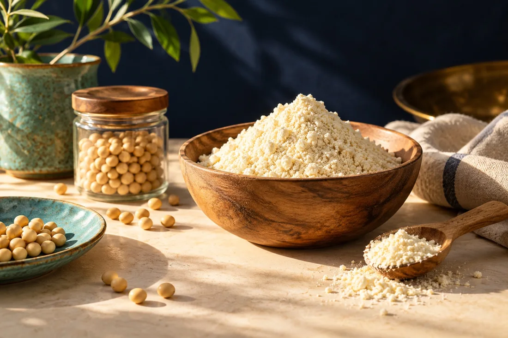
RECIPE INDEX
料理名・材料名で探せます。
50 件の料理
ココアの香りの小さな蒸しパンです。12個分の配合を1個ずつ加熱するので、朝に食べる分を取り分けやすい形です。

卵などと合わせたい朝に、生地を薄く広げて作る食パン風です。私は食パンが食べたい時の選択肢として考えました。具を挟んだり、目玉焼きをのせたりも

小さな容器に分けず、耐熱ボウルで全量を加熱して切り分けるチョコ味です。私が作った時は、冷めてからのほうがしっとりして食べやすく感じました。

りんごの皮を甘く煮たコンポート入りの、果物の香りがする蒸しパンです。私が作ったものは、ふわふわの中にもちもち感がありました。
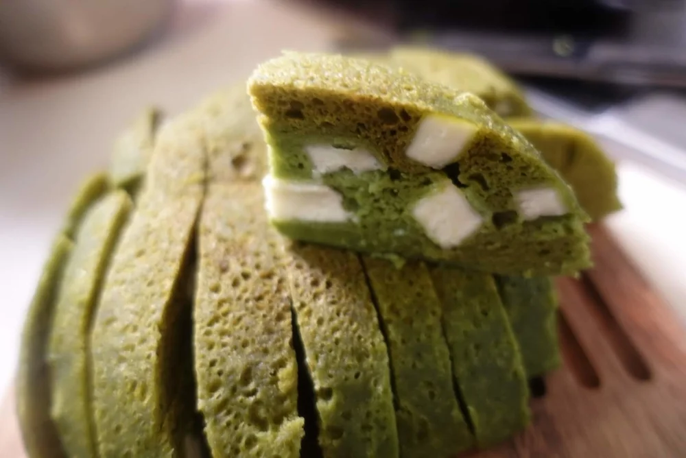
野菜とチーズを合わせた緑の蒸しパンです。ほうれん草は生の葉ではなく粉末を使います。切り口でもチーズの具が見えます。
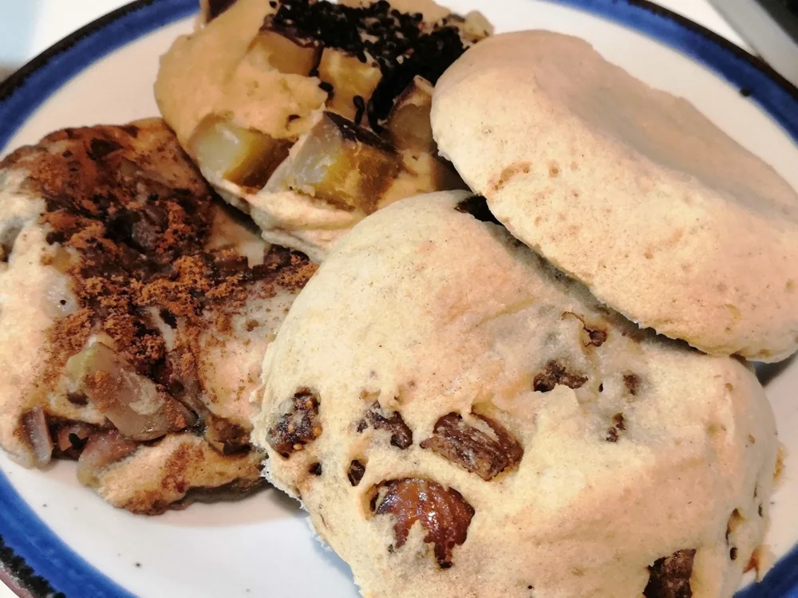
卵や牛乳を使わずに作りたい時の配合です。おからパウダー、オオバコ、アーモンドミルクで作ります。まずは具なしで生地の味を確かめてください。
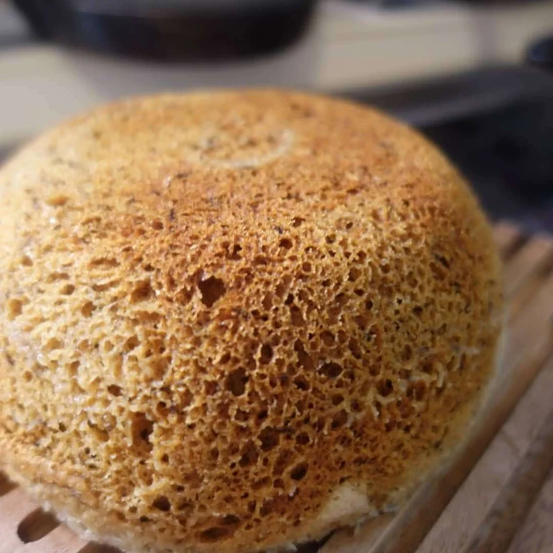
家に熟したバナナがある時に、その香りを生かす蒸しパンです。私は皮が黒くなったバナナで作りました。傷んだバナナは使いません。

小さく焼いて楽しむ、おからパウダーのミニパンケーキです。私はこの生地を、ジャムやバターと合わせたり、あんこを挟んだりする食べ方も紹介してきま

ミニパンケーキとは別に、おからパウダー80gとプロテイン30gで作る生地です。元の作り方では、バニラ味やチョコ味のプロテインも紹介しています

スキレットに生地を流し、両面焼きの魚焼きグリルで焼くパンケーキです。裏返さないので、崩れやすいおからの生地でも作りやすく、小麦粉を使わない配

おからパウダーに小麦粉を大さじ1加えて、グリルで焼くホットケーキです。私はこの配合を、卵の風味があって、ふんわりしっとりした仕上がりとして紹

米粉とオオバコを使う、もちもちした食感のパンケーキです。私は元記事で、ふんわりもちもちで、お米の香りがどこか団子を思わせる味わいと紹介しまし

おからパウダーと片栗粉を混ぜてゆでる、もちもちした団子です。元記事では、材料を半量や4分の1量にして試す方法も紹介しています。

ゆでずに電子レンジで加熱し、甘いこしあんをのせる団子です。あんこは、すでに加熱して作ったものを使います。
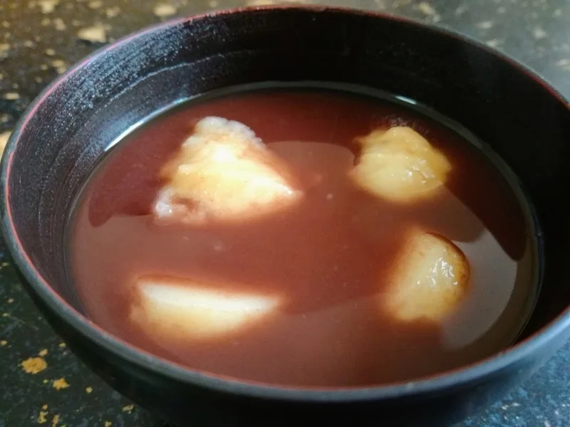
加熱済みのあんこを水でのばし、電子レンジで温めて作るおしるこです。団子は16個分の配合なので、おしるこ1杯分とは分けて考えてください。
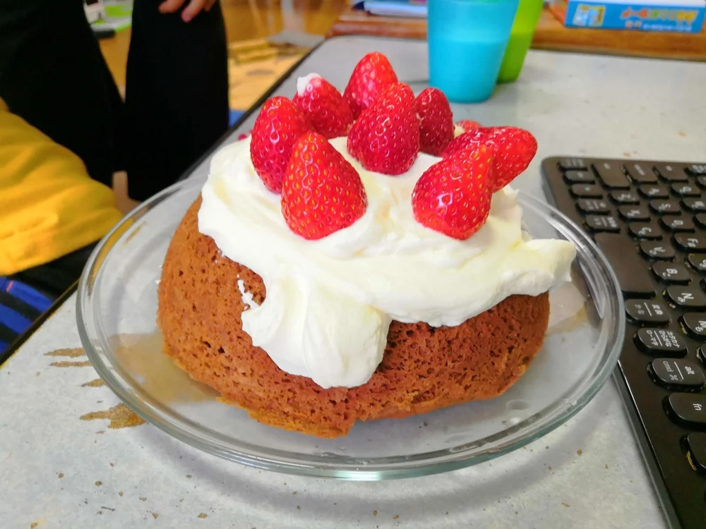
出典の役割：生地の材料・手順は初版原稿、写真の飾り付けは2020年の元記事です。 *ホイップクリームと苺を飾った元記事の作例。飾りは本

ピュアココアで味をつけ、天板に流して焼くチョコケーキです。ココアは先ほどの蒸しケーキが20g、こちらが30gなので、材料表を分けて見てくださ
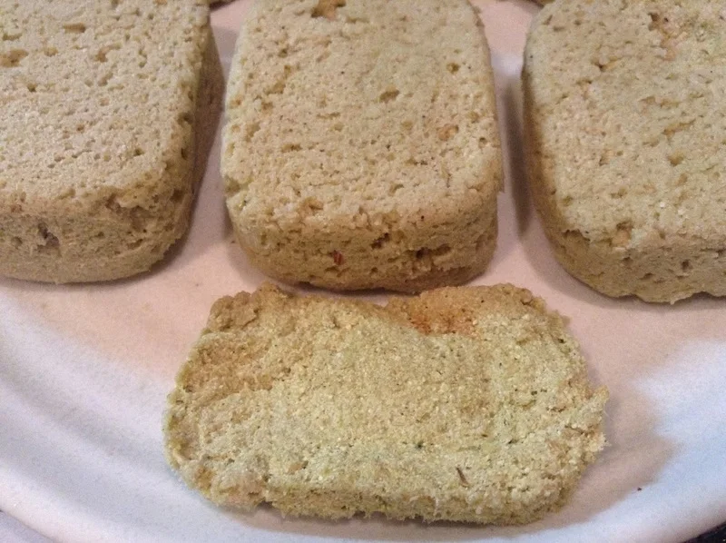
*写真は元記事の抹茶風味の作例です。元記事では、ココアパウダーの代わりに抹茶を入れて同じ生地を作っています。本書の材料と作り方は、「蒸しパン

おからパウダー30gと卵2個で作る、小麦粉を生地に入れないお好み焼きです。キャベツや長ネギ、豚肉などを合わせ、私はソースとマヨネーズにからし

キャベツと人参を混ぜた卵多めの生地に豚こま肉をのせ、天板に広げて焼くお好み焼きです。卵の風味に野菜の甘みが合います。途中で裏返さずに焼き、焼

豚肩ロースを香ばしく焼く、片栗粉と和風だし入りのおからパウダーお好み焼きです。私はカレー風味のマヨネーズやからしを合わせましたが、仕上げは好

おからパウダーに絹ごし豆腐、キャベツ、長ネギを合わせ、豚肉の代わりに油揚げとハムを使うお好み焼きです。私は肉の代わりに、ストックしていた油揚

*元記事の料理写真。* 長芋の入った、ふんわりしたお好み焼きで、生地にはおからパウダーと中力粉を100gずつ使います。おからだけに置き換え
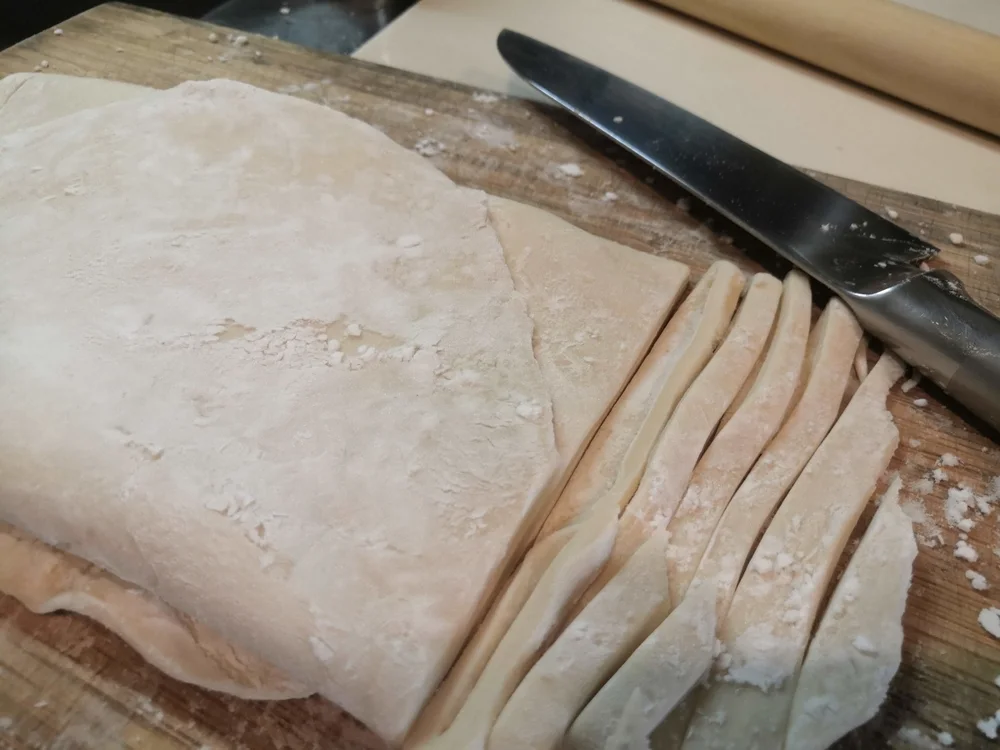
中力粉1kgにおからパウダー80gを加え、生地に塩を入れずに打つ手打ちうどんです。おからだけで作る麺ではなく、主な材料は小麦粉です。

用意したおから入りほうとう麺を、大根の入っためんつゆで直接煮込む料理です。麺を別の鍋でゆでずに、つゆと一緒に煮上げます。もちもちした麺に、大

粗く刻んだ鶏胸肉に、豆腐、卵、おからパウダーを混ぜて揚げるナゲットです。私が公開してきたおから料理の中でも、揚げ物も適度に楽しみながら、食べ

豆腐を水切りせずに混ぜる、生姜と長ネギ入りのやわらかい鶏つくねです。フライパンで焼いて甘辛いたれを絡めれば、おかずにもお弁当にも使えます。

*キャベツで包んだ成形の例（加熱前）。中心まで十分に加熱してください。* 小麦の皮の代わりに、千切りキャベツを肉だねの周りにつける、電子レ

液体塩こうじと香辛料で下味をつけた鶏胸肉に、豆腐と卵を混ぜ、まとめて蒸してから切り分けるミートローフです。私の公開記事では、切ってそのまま食

合いびき肉におからパウダーと豆腐を加えて作り、チーズをのせて魚焼きグリルで香ばしく焼くハンバーグです。肉だねはまとめて作り、その一部を小さな

おからパウダーを薄めにつけてじっくり揚げ、皮をパリッと仕上げる手羽元の唐揚げです。粉を厚く重ねないので、おからパウダーだけの衣を試してみたい

一口大に切った鶏むね肉に、卵とおからパウダーの衣をつけて二度揚げする、やわらかな唐揚げです。小さめに切ると、からあげクンを思わせる食べやすい

*作り方を示した説明用イラスト。元記事の完成写真ではありません。* おからパウダーと片栗粉を大さじ3ずつ使う衣で揚げる、ブイヨン味の洋風か

*写真のいんげんなどの付け合わせは任意です。以下の材料には含めていません。* おからパウダーと片栗粉の衣で鶏むね肉を揚げ、甘酸っぱい新玉ね

厚切りのラム肉を液体塩こうじと無糖ヨーグルトに漬け、クミンとカレー粉を合わせた、香りを楽しむ唐揚げです。鶏肉の唐揚げとは違う風味を楽しみたい
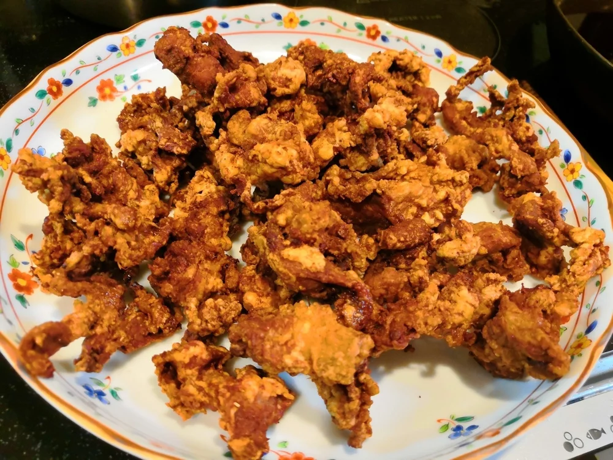
豚こま肉におからパウダーの衣をつけてじっくり揚げる、生姜醤油が香ばしいカリカリ食感の一品です。鶏むね肉のやわらかな唐揚げとは違う仕上がりなの
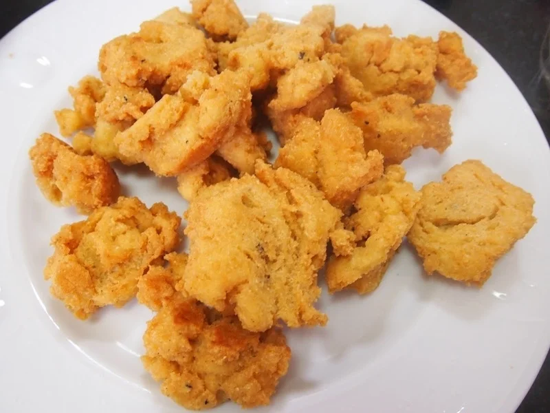
肉を使わず、豆腐とおからパウダーで作る生地をスプーンですくって揚げる、肉なしの「お」から揚げです。鶏肉と同じ食感を目指すより、ナゲットのよう
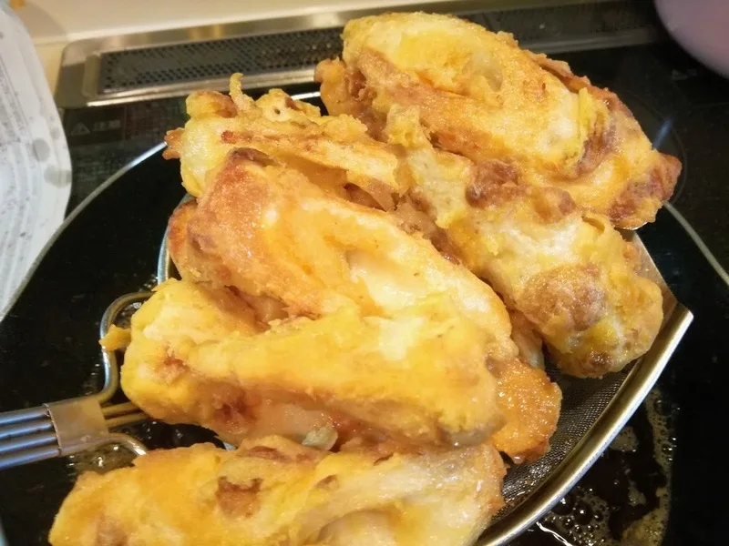
ちくわに卵入りの衣をまとわせて揚げる、黄金色の天ぷらです。私は公開記事で、日本の天ぷらというより、中華風の天ぷらに近い衣として紹介しました。
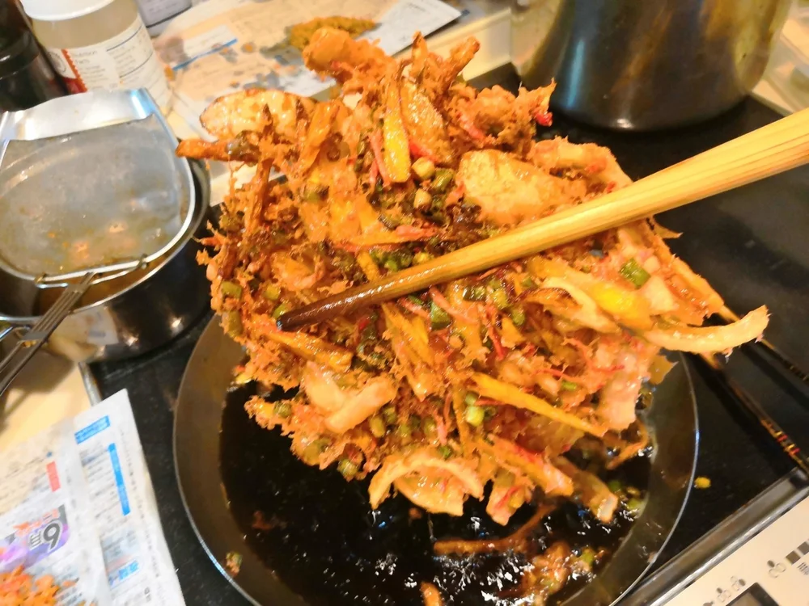
紅生姜の塩気に、玉ねぎと人参の甘みを合わせた、おからパウダー入りのかき揚げです。私が作ったものは、1枚で2～3人前になる大きなサイズでした。
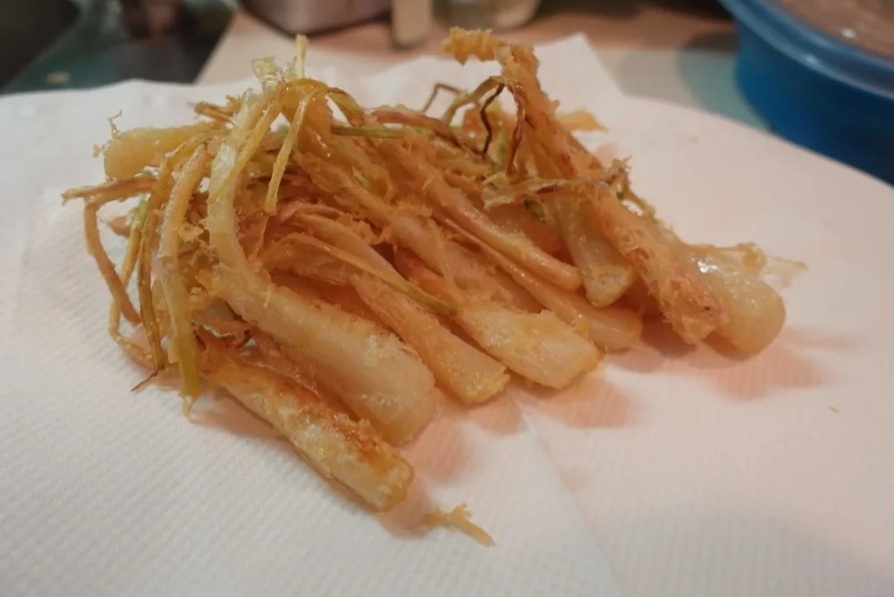
洗ったエシャレットをまるごと衣にくぐらせて揚げる天ぷらです。私は塩をつけて、カリッとした衣とホクホクした中身を楽しみました。
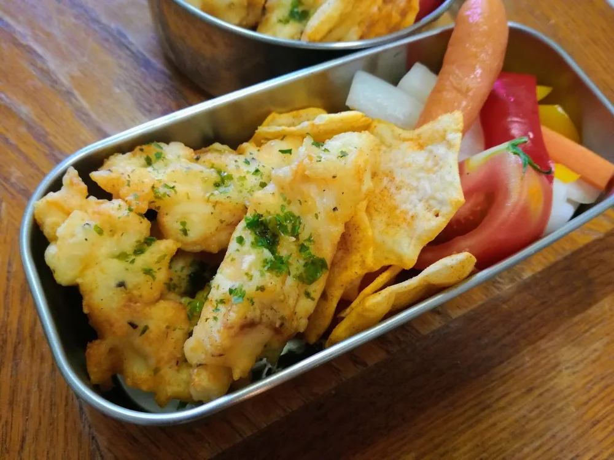
小麦粉とおからパウダーを合わせた衣を真鯛に直接絡め、揚げ焼きにするフリッターです。私はプロテインチップスやピクルス、トマトと一緒にお弁当にし
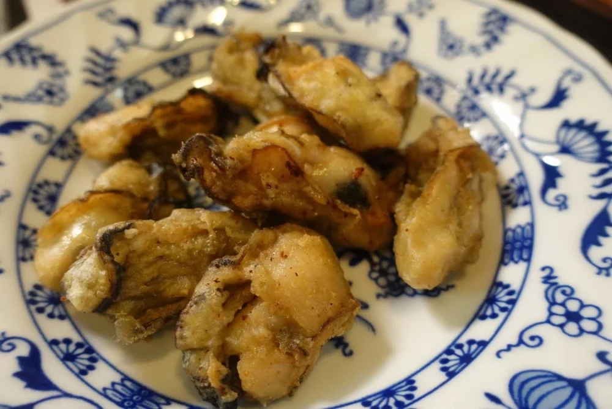
牡蠣におからパウダーと片栗粉を絡め、そのまま揚げる唐揚げです。私は塩と花椒を合わせたり、ポン酢をつけたりして食べました。
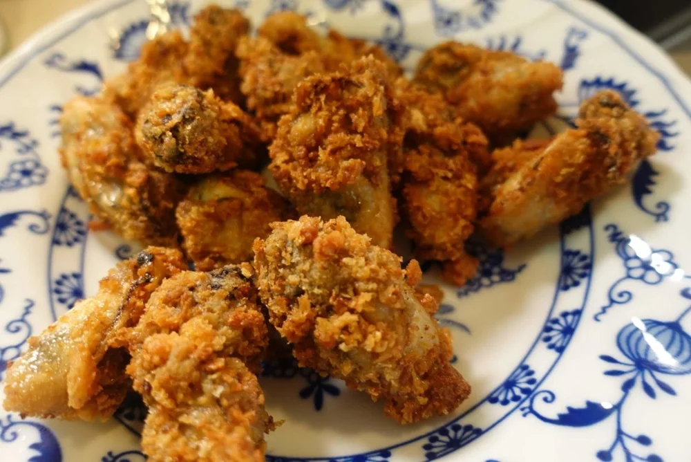
牡蠣唐揚げの下衣にパン粉を重ねて揚げる、おからパウダー衣の牡蠣フライです。私は全粒粉パンの残りを砕いた、粗めのパン粉を使いました。

トマトとヨーグルトを使い、仕上げの煮込みでおからパウダーを加える、8人前のチキンカレーです。私がこのカレーで気に入っているのは、スパイシーな

前の料理のおからパウダー入りチキンカレーに、缶詰のミックスビーンズを加えるダルチキンカレーです。「ダル」は豆を使うカレーの名前で見かける言葉

*蒸し大豆カレーの元記事の盛り付け例。ごはん・紅生姜・副菜は本文のカレー材料に含めません。* 調理済みのおからパウダーカレーに、作り置きの

バターで炒めたおからパウダーをルーの代わりに使う、かぼちゃのクリームシチューです。かぼちゃの甘味に、いんげんやコーンの食感が合います。

*写真の緑の具材は、元の手羽大根に入っている冷凍いんげんです。* 調理済みの手羽大根を、カレー粉とおからパウダーで和風カレーに作り替える料

ポテトフレークを使い、鍋の中で生地をまとめ、成形せずに焼ける鶏そぼろ入りのスプーンコロッケです。おからパウダーは3人前で15gなので、使い切

じゃがいもとおからパウダーを合わせ、カロリーハーフのマヨネーズと同量のプレーンヨーグルトで和えるポテトサラダです。じゃがいもをおからパウダー
検索語を短くするか、「条件をクリア」で50料理から探してください。
BEFORE YOU COOK
最初の一品は、材料と作り方を最後まで読んでから。使い切ろうと粉を増やさず、分量どおりの仕上がりを確かめてください。
1個ずつか全量か、電子レンジの出力は何Wか。料理ごとの材料と加熱条件をひと組で確認し、ほかの料理の時間を借りません。
容器もふたも電子レンジ対応か確認します。密閉せず、膨らむ余裕を。時間は目安なので、中心まで火が通ったかも確かめてください。
THE COOKBOOK
『健康おからパウダー節約レシピ』
50料理・漫画50話をまとめたKindle本。
基本の使い方も、料理のコツも一緒に。
読者特典は、本の巻末にある専用リンク・QRコードから公式LINEへ。すでに本をお持ちの方は、巻末の案内をご利用ください。
公式LINE「50kgダイエットした主夫社長ひろくん」 @qov5652f：公式アカウントを見る。このリンクは友だち追加用です。特典の受け取りには巻末の専用案内をお使いください。
特典の詳しい案内を見る →